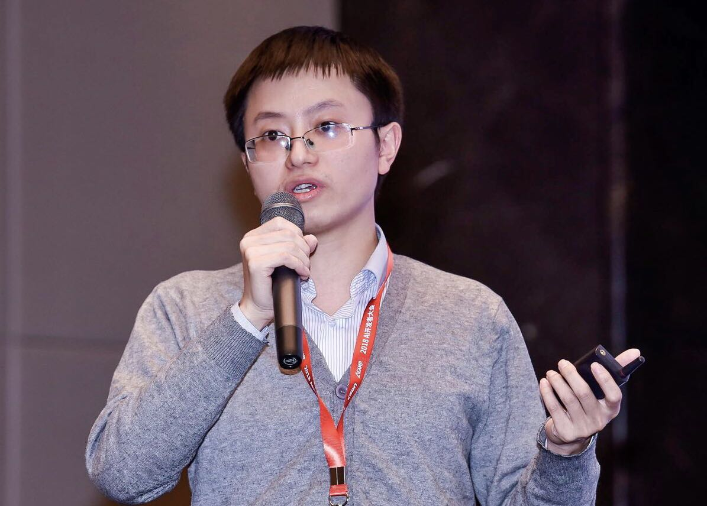

 |
Fuzheng ZhangResearcher, leading knowledge graph team in NLP Center, Meituan-Dianping GroupOffice: Block B, Hengdian Building, No.4, Wangjing East Road, Beijing Email: zhfzhkris AT outlook DOT com CV • Google Scholar • GitHub • LinkedIn • Zhihu |
Bio
- Hongwei Wang is now a postdoctoral researcher in Computer Science Department, Stanford University. His research interests include machine learning and data mining, particularly in graph representation learning mechanisms, algorithms and their applications in real-world data mining scenarios such as recommender systems, knowledge graphs, social networks, and sentiment analysis.
- Hongwei Wang received Ph.D. degree from Department of Computer Science and Engineering, Shanghai Jiao Tong University in 2018, and B.E. degree from ACM Class, Shanghai Jiao Tong University in 2014. He was an intern at Microsoft Research Asia and Meituan-Dianping Group. He was one of the recipients of 2018 Google PhD Fellowship.
News
- [06/28/2019] I give a talk "Knowledge-graph-aware Recommender Systems" at JD.COM Silicon Valley Research Center.
- [04/29/2019] One paper is accepted by KDD 2019: "Knowledge-aware Graph Neural Networks with Label Smoothness Regularization for Recommender Systems".
- [04/03/2019] I am mentoring CS341: Project in Mining Massive Data Sets.
Selected Publications
2019


2018


2017

Honors
- Google Ph.D. Fellowship (6 in East Asia, 57 in total), 2018.
- National Scholarship (ranking: 1st/~200), 2018.
- Tang Lixin Scholarship, 2018.
- The 5th place in RecsysChallenge, 2017.
- Outstanding Doctoral Freshman Scholarship, 2014.
- Shanghai Jiao Tong University Outstanding Undergraduate, 2014.
- The 1st prize of National Senior High School Mathematics Contest, 2009.
Media Coverage
- MSRA News: Hongwei: "MSRA is the best place for CS PhD in China".
- MSRA News: Introduction to the six papers accepted by WWW 2019.
- Fudan Knowledge Workshop: Network representation learning based recommender systems.
- SJTU News, SJTU CS News: CS PhD candidate Hongwei Wang won 2018 Google PhD Fellowship.
- Sohu News: Recipients of 2018 Google PhD Fellowship Announced.
- AI Finance: No. 5 Dan Ling Street.
- MSRA News: Knowledge graph enhanced recommender systems.
- MSRA News: How to apply knowledge graph to recommender systems?
- PaperWeekly: GAN in network representation learning.
Invited Talks
- Knowledge-graph-aware Recommender Systems, at JD.COM Silicon Valley Research Center, June 2019, Mountain View.
- When Recommender System Meets Network Representation Learning, at ACM Class Student Academic Festival, June 2018, Shanghai.
- Graph Representation Learning and GraphGAN, at PaperWeekly online talking, January 2018, Beijing.
Professional Activities
- Mentor for Stanford CS341 (Project in Mining Massive Data Sets), Stanford CURIS (Undergraduate Research Internship in Computer Science).
- Teaching assistant for SJTU CS377 (Project Workshop of Database System).
- Program committee member for AAAI (2020).
- Conference reviewer for WWW (2017, 2018, 2019), KDD (2017, 2018), AAAI (2018, 2019), IJCAI (2018, 2019), CIKM (2017, 2018), DASFAA (2018), SIGIR (2018), MM (2018).
- Journal reviewer for IEEE TNNLS, IEEE TKDE, IEEE Access, ACM TIST, ACM TWEB, Elsevier OSNEM, Elsevier Information Sciences.
- Research assistant at Hong Kong Polytechnic University.
- Intern at Microsoft Research Asia and Meituan-Dianping Group.
Misc.
- I am a cinephile. Some of my favorite directors are Ang Lee, Quentin Tarantino, Stanley Kubrick, Alfred Hitchcock, and Steven Spielberg. I also like writing reviews.
- I am a fan of Chinese classical poetry.
I used to write one when I was in the first year of PhD, after my mom saw me off at the station: